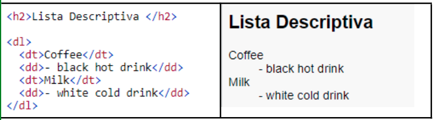
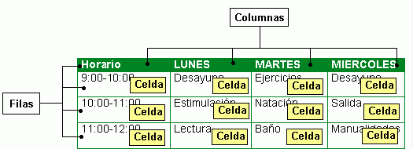
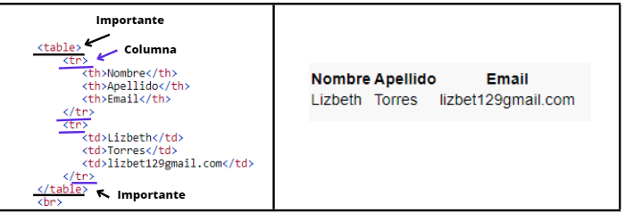

Hay distintos tipos de listas
Es aquella que dice un titulo y abajo se pone la descripción
Aqui se realizo las tablas pero no se tendra un contorno
table:Es la más importante define que sera una tabla
tr:definicir como la tabla o los datos
td: son los datos internos
th: son los principales titulos de las columnas
Diferenciar las filas con las tablas
Asi se crea una tabla
Para que se tenga un margen de la tabla y no se vean asi los datos si no más estetico se realiza esto
Código